-
ホーム
-
製品 / サービス
-
未来統計
まだ過去の統計で商圏分析をしていますか？
未来統計は、2045年までの未来の人口を推計手法により求めた、 過去に例のない新しいタイプの人口統計データです。
Point 1
近未来の統計値を推計手法により求めた人口統計データです。
5年先までの町丁字別男女１歳刻み人口値を収録しています。
Point 2
コーホート法ではカバーしきれない、社会的な変動要因（マンション分譲情報、大規模開発情報）を活用して、推計の精度を向上しています。
Point 3
国勢調査などの統計データは、いわゆる「過去の情報」です。「未来統計」を活用すれば、ビジネスを行う予定の将来人口を基にした高い精度のエリア分析や経営判断を行うことができます。
特徴
最新/将来の地域ポテンシャルによる地域分析が可能
国勢調査などの統計データは、一般にいわゆる「過去の情報」です
「未来統計」は、データ作成時から5年先までの毎年の町丁字別男女各歳人口値、および2025年から2045年まで5年おきの男女別人口値を収録しています
ビジネスを行う予定の将来人口を基にした、高い精度のエリア分析や経営判断を可能とします
社会変化情報を入手し、確度の高い未来の人口指標を
「コーホート法」は過去の人口増減トレンドに依存し、精度には限界があります。そのため、大規模開発などの不連続的な地域の変化による人口変動には対応できません。
「未来統計」は、コーホート法に加えて土地区画整理事業や分譲開始予定のマンション情報など確定的な人口変動要因を組み込んで推計します。
国勢調査にはない男女別1歳刻み推計人口を提供
国勢調査の町丁字等集計においては、年齢別人口は5歳刻みで公開されています。
「未来統計」は、推計により1歳刻みに加工した上で人口推計を実施しています。
こういう方におすすめ

小売業・サービス業
- 国勢調査を活用して店舗開発の計画を立案している。
- 店舗計画からオープンまでは２～３年かかるし、店舗は将来もそこで運営し続ける。
未来統計ならビジネスを行う将来のその場所の市場規模がわかります。
確度の高い将来情報を基にした店舗開発が可能となります。
インフラ
- GISを活用して、通信アンテナや電話線、電力網、ケーブルテレビ、上下水道等の設備計画を行っている。
- 数年先の人口変動を見込んだ収益予測に応じた設備計画を行えれば、無駄のない投資ができて収益性の向上が目指せる。
未来統計なら設備計画を行う際に、将来のその設備の最適規模がわかります。
将来の人口変動を見越した施設計画が可能となります。

防災
未来統計なら避難所の設置や備蓄計画など、将来の人口規模に応じた長期的な投資計画が立案できます。
防災計画の基準として将来の推計人口を活用可能です。
未来統計で作成した主題図の例
流山おおたかの森付近
2015年（商圏人口：103,006人）
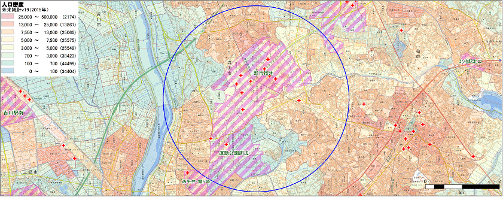
2020年（商圏人口：113,689人）
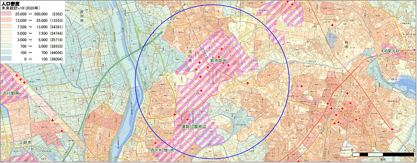
2045年（商圏人口：133,215人）
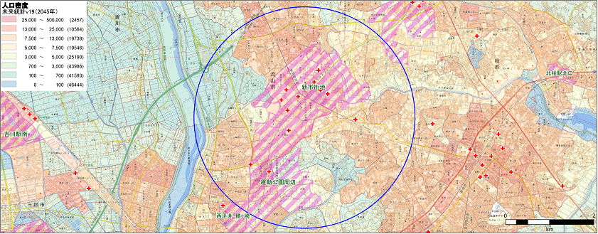
地図中央を南北に2005年に開通したつくばエクスプレスが通る新しい街です。
上段の2015年の時点ですでにはつくばエクスプレス沿線には人口集積がありますが、まだ開発が完了していない区画整理対象地域もあります。中段および下段は未来統計による2020年と2045年の推計人口分布を示しています。
区画整理事業は2018年～2022年頃に完成を予定しており、これらの地域での人口の集積が進むであろうことが理解できます。その後人口は微増傾向で推移する見込です。
東京23区湾岸域
2015年（商圏人口：217,619人）
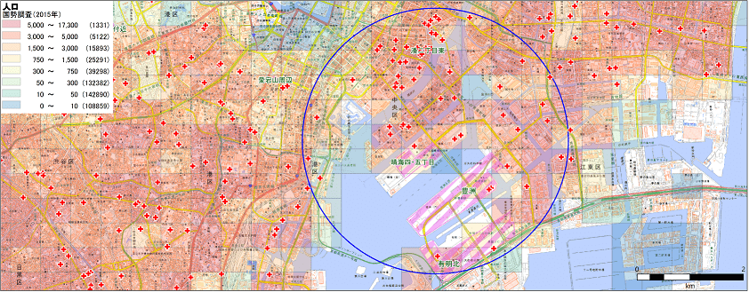
2020年（商圏人口：253,770人）
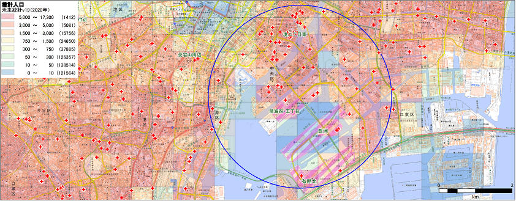
2045年（商圏人口：330,877人）
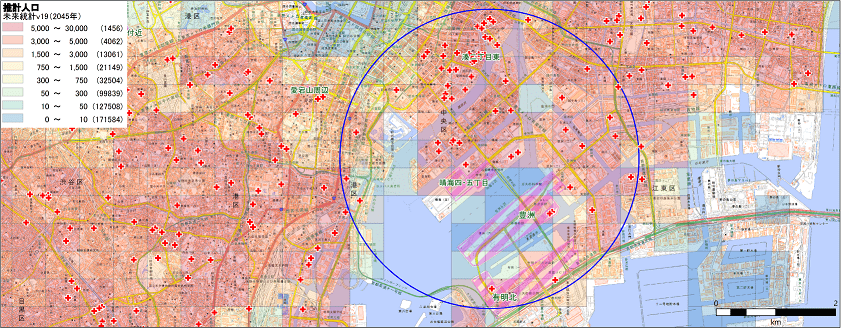
上段の2010年の時点では、勝どきから晴海にかけての開発はすでに進んでいますが、有明方面はまだ人口集積は進んでいません。
2015年以降に相当の分譲マンションが建設されたことがわかります。
中段および下段は未来統計による2020年と2045年の推計人口分布を示しています。
有明や新豊洲方面の開発が進み、人口の集積が始まります。2045年に向けては全国的に人口の減少傾向が見られますが、この地域では依然として人口増加が続く見込です。
名古屋市守山区付近
2015年（商圏人口：63,127人）
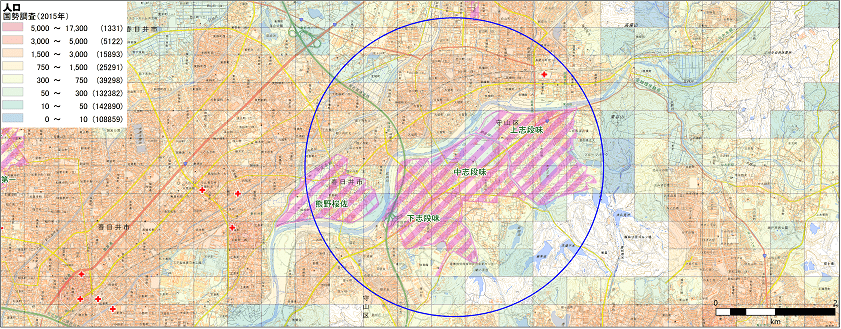
2020年（商圏人口：75,140人）
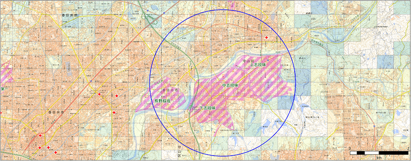
2045年（商圏人口：82,043人）
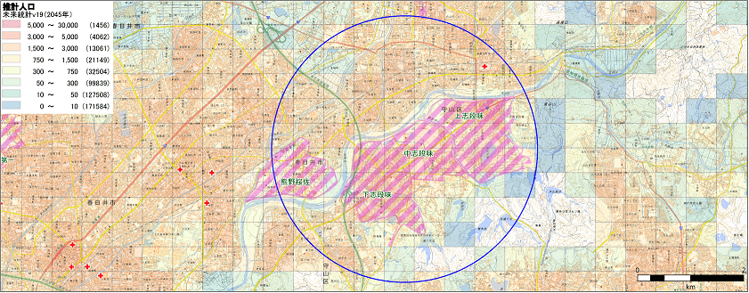
上段は2015年の人口分布を示しています。
地図北東側にある高蔵寺ニュータウンは1960年代から開発が進んだ成熟した住宅地である一方、人口密度が低い南側の志段味地区は区画整理の計画があり、人口増加が見込まれます。中段および下段は未来統計による2020年と2045年の推計人口分布を示しています。
高蔵寺ニュータウンでは人口の著しい変動は見られません。その一方、志段味地区では区画整理事業の伸展に伴い人口集積が進もことが予測されます。
京都市伏見周辺
2015年（商圏人口：78,206人）
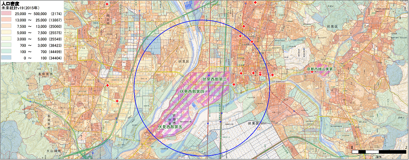
2020年（商圏人口：82,562人）
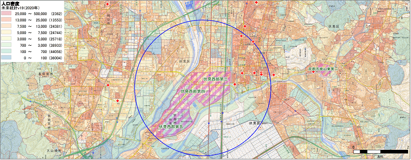
2045年（商圏人口：76,742人）
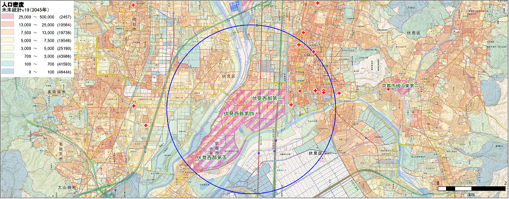
上段は2015年の人口分布を示しています。
伏見の旧市街地の南西側に複数の区画整理事業が2035年の事業完了に向けて進行中です。区画整理事業区域では2015年の段階では一部を除いて人口の集積は進んでおらず、旧市街地の密度が高中段および下段は未来統計による2020年と2045年の推計人口分布を示しています。
2020年の段階では区画整理事業の大半が完了している予定で、この地区での人口の集積が進む見込です。一方で旧市街地では高齢化による人口減少が進み、2045年にはこの地域全体の人口は減少の見込です。
青森市
2015年（商圏人口：95,369人）
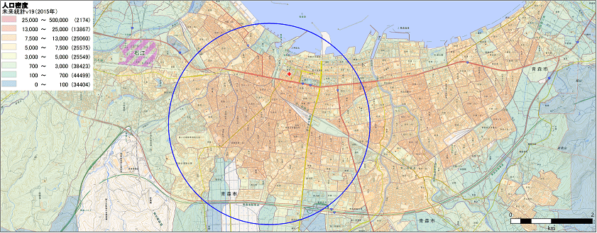
2020年（商圏人口：90,625人）
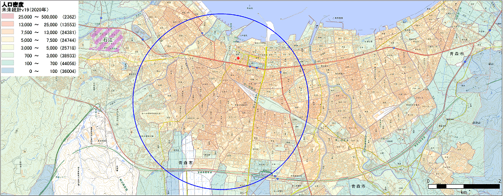
2045年（商圏人口：61,017人）
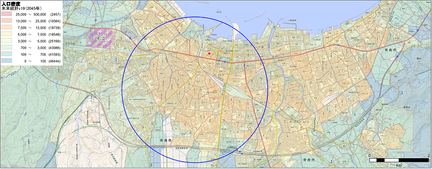
上段は2015年の国勢調査による人口分布を示しています。
青森駅や青森県庁を含む半径2km強のエリアに9万人強の人口が集積していることがわかります。
中段および下段は、未来統計による2020年と2045年の推計人口分布を示しています。
域内では区画整理事業の実施が見られるものの、2020年までの5年間で約5000人の人口減が見込まれます。2045年にはさらに人口減少が加速することが予測されます。
- ※図中における網掛けは区画整理地区、赤点は新規分譲マンションを示します。いずれのデータも本製品には含みません。
- ※地図は地理院地図利用。
未来統計の推計手法
本推計手法については、「人口変動推測プログラム（特許第5914734号）」として特許取得しております。
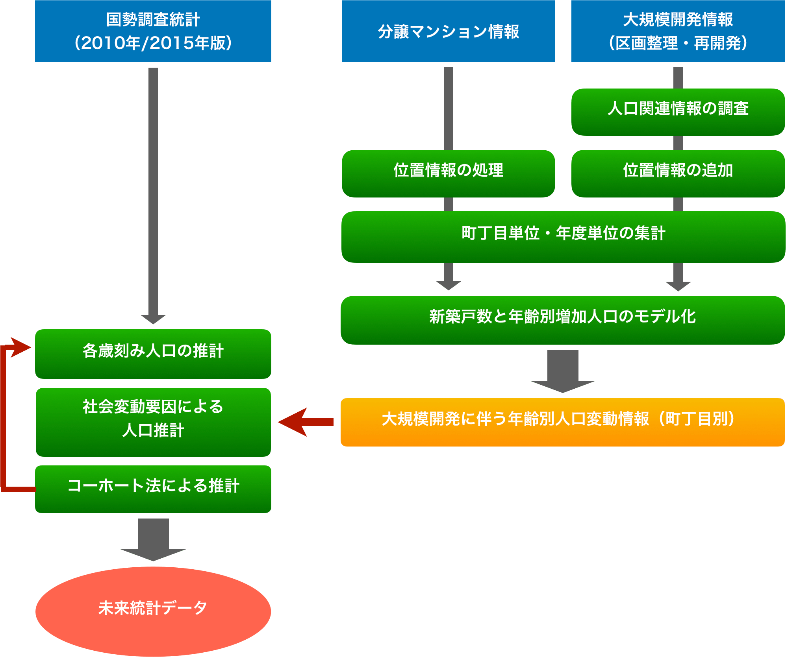
コーホート法
人口推計のベースには、国立社会保障・人口問題研究所の「日本の将来推計人口」で採用されたコーホート法を採用しています。
ただし、この手法だけでは人口の社会移動を完全にはカバーできず、小地域の人口推計には限界があります。
マンション分譲情報
2015年9月以降（前回の国勢調査実施時）に竣工した分譲マンション全国約24万戸（本年度追加分：77,000戸）の供給戸数を基に、年齢別の人口増加を推計し、当該小地域の人口を加算します。
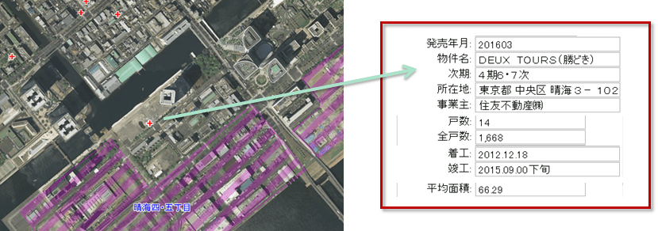
土地区画整理情報
2015年10月1日以降に事業完了（換地処分完了）した土地区画整理事業のうち、施工後の計画人口が200人以上増加する大規模開発831件の地域を抽出。2015年国勢調査時の事業地区内人口と計画人口との差分から年齢別の人口の増加見込を推計し、当該小地域の人口を加算します。
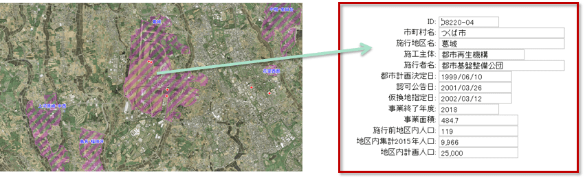
製品概要
| 製品パッケージ |
集計単位：「町丁字版」および「メッシュ版」
パッケージ：「標準版」および「5歳階級版」 |
| データ提供エリア |
日本全国（提供単位は都道府県） |
| データの構成単位 |
「町丁字版」：町丁字等（平成22年国勢調査の境界地図に対応。地図データは別途）
「メッシュ版」：地域メッシュ（500mおよび1km。地図データは別途） |
| データの作成時点 |
2018年12月現在（2019年版） |
| 更新頻度 |
1年に1回 |
| 出典データ |
- 平成22年国勢調査 小地域集計結果 （総務省統計局）
- 分譲マンションデータ （株式会社不動産経済研究所） ：2017年12月現在（2019年版）
- 区画整理事業情報（株式会社楽しいチリビジ）：2018年3月現在（2019年版）※本情報は人口増加が100人以上となる予定のもののみ対象としています。
|
| 提供フォーマット |
csv形式 または MapInfo形式 |
販売価格（町丁字版、メッシュ版共通）
- ※ 保守更新サービスは、契約期間中の最新バージョンを提供します。
- ※ 都道府県単位の場合は１都道府県あたり上記価格の10％となります。
- ※ 同一企業内での社内での複数ユーザーの使用の場合は、上記価格の2倍価格となります
製品資料、製品資料、ユーザーガイド、サンプルデータ（GISユーザー様向け）、ご希望エリアのマップのスクリーンショットなども評価用に提供しております。
ご不明な点などがございましたら、お気軽にご相談ください。
※「未来統計」は株式会社楽しいチリビジの登録商標です。